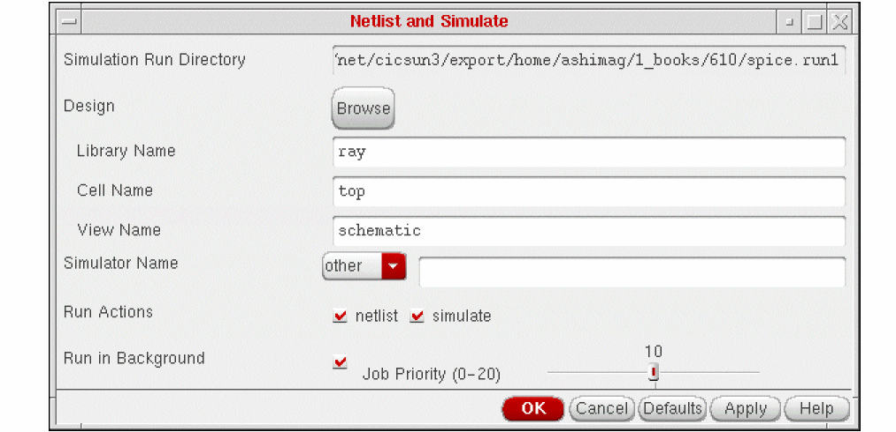

4
Running a Simulation
In this chapter, you can find information about
- Choosing Simulation Run Options
- Simulation in the Graphical Environment
- Simulation in the UNIX Environment
- Full Simulation
- Simulation in Steps
- Simulation in Batch Mode
- Interactive Simulation
For information on SE SKILL APIs, see the Digital Design Netlisting and Simulation SKILL Reference.
Choosing Simulation Run Options
You can use the Options command before you run a simulation to specify whether the
To specify the options you want for a simulation
Simulation in the Graphical Environment
To generate a netlist, run a simulation using an existing netlist, or run a complete simulation after generating a new netlist
-
In the Schematic window, select Simulation – Netlist/Simulate.
The following form appears:
Most fields in this form are set to the values you specified with the Initialize command. You can edit form fields by typing or by using the Browser.
You cannot change the simulation run directory by editing this form. To change this directory, click Cancel and select the Initialize command again. - Type in the values and select the options you want.
-
Click OK.
If you click Cancel, the simulation is not run.
When a background simulation is completed, a dialog box appears with the completion status of the simulation.
Simulation in the UNIX Environment
To run a simulation in the UNIX environment
-
Change to the directory that contains the
cds.libfile. (You can also specify thecds.libfile at the command line with the -cdslib option.)
Thecds.libfile contains the library path to the design. If you invoke si in a directory that does not contain thecds.libfile, specify a fully-qualified path to thecds.libfile following the -cdslib option.si /mnt/temp/spice.run1 -cdslib /mnt/dave/cds.lib -
Type the si command followed by the full system path to the simulation run directory. For example, if the path to your run directory is /mnt/temp/spice.run1, type
When the system has been initialized, SE displays a command prompt (>).si /mnt/temp/spice.run1
You can type the si command, with any or both of two options,noenvanddifftest. You usenoenvif you do not want the environment file to be specified by si. In this case, the default environment file will be picked up by OSS. For example:si -noenv
You use thedifftestoption to strip off any date stamps that appear in thesi.logfile or in the standard output during netlisting. For example:
si -difftest -cdslib ./cds.lib -batch -command netlist
You can now type the SE commands to run any of these:
Full Simulation
After y
>sim
The sim command initializes simulation variables appropriate for your simulator (specified by the
Simulation in Steps
You can type the following commands to run a simulation in steps. Use these commands in the order listed below.
simInitRunDir
The simInitRunDir command sets up your
Copies a default
Creates a waveform (raw) directory in the simulation run directory.
Each interface might have additional initialization procedures. Some interfaces create input files in addition to the basic control file.
netli
The netlist command produces a text description of the design specified by the
simin
The simin command translates names in the control file into the simulator input file si.inp. You can only run this command if a netlist has already been generated.
runsim
The runsim command runs the simulator. This command performs the following actions:
- Runs the specified simulator using the si.inp file as its input
- Translates waveform output from the simulator to the Cadence Waveform Storage Format (if necessary)
- Translates names in the text simulator output back to the user-assigned names in your design
You can only use this command after running the netlist and simin commands to generate the simulator input files.
e
Use the exit command to exit SE.
Simulation in Batch Mode
You can run a simulation in batch mode by starting the -batch option.
si -batch [run_directory_name
SE initializes the environment and runs thesim command automatically runs the following SE commands:
For example, if your /mnt/dave/aluSimulations/silos.run1, and you want to run a batch simulation with a log of events, enter the following command:
si -batch /mnt/dave/aluSimulations/silos.run1 >&
/mnt/dave/aluSimulations/silos.run1/si.log &
The si.log file in the simulation run directory so that you have a log of events during the run. This log is created automatically when you run simulations in the background from the Cadence graphical environment.
You can also run a single SE command in -command option.
si -batch -commandcommand_namerun_directory_name
For example, if your run directory name is /mnt2/deborah/spice.run1, and you want to generate a netlist, enter the following command:
si -batch -command netlist /mnt2/deborah/spice.run1
Interactive Simulation
If your simulation interface supports interactive simulation, you can run simulation interactively using the following procedure. You must run the
- In the Schematic window, select Simulation – Interactive.
-
Choose to netlist your design, or not, and click OK.
By default, the system opens the following three windows:- A window for displaying waveforms produced during the simulation (at the top half of the screen)
- A window for editing the design you are simulating (at the bottom right)
- A window for textual interaction with the simulator (at the bottom left)
Commands in the simulator window vary depending on the simulator you use.
If you prefer to set the window placement yourself, in the CIW, select Options – User Preferences and set the Place Manually button. - When you finish simulation, select Finish Interactive from the SE menu of the simulator window.
Netlist and Simulate Form
Simulation Run Directory specifies the simulation run directory. The field is read-only.
Design fields let you find or specify the design.
Browse brings up the TDM Library Browser when you click the button.
Library Name specifies the name of the library containing the top level of your design.
Cell Name specifies the cell name of the top level of your design.
View Name specifies the view name of your design.
Simulator Name specifies the name of the simulator. Select other if you want to type in the name of an unlisted simulator.
Run Actions buttons specify whether you want to netlist, simulate, or both.
Run in Background runs the job in the background and lets you use the graphical user interface while the job is running.
Job Priority adjusts the priority for background jobs only. Change the priority by clicking and dragging the bar in the field to the left or right. The lower the number in this field, the faster the background job runs and the slower the system performs other tasks.
Simulation Environment Options Form
Use Hierarchical Netlister creates a hierarchical, rather than a flat, netlist. This field is ignored if both types of netlists are not supported.
Incremental Netlisting limits the new hierarchical netlisting to parts of the design you modified since you last created a netlist. The field has no effect unless you use the hierarchical netlister.
Re-netlist Entire Design creates a new netlist for all cellviews in your design.
Run Simulation Remotely runs the simulation on a remote file server. You specify the remote file server in the Simulation Host Name field.
Simulation Host Name specifies the name of the remote simulator.
Simulation Host Is Different Type specifies that a computer running a remote simulation has a different binary storage format than your local computer. You must set this correctly for remote simulations to view waveform results.
Return to top